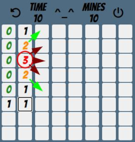
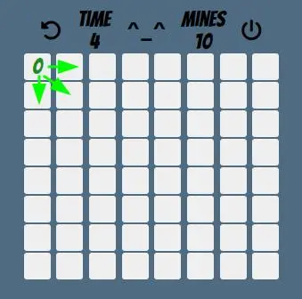
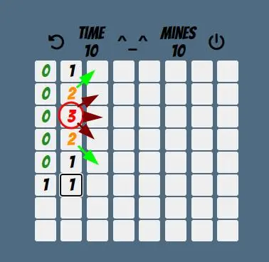
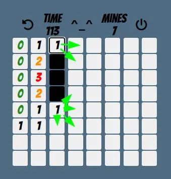
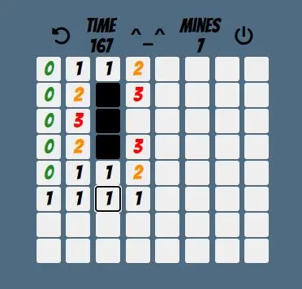

How To Play
MineSweeper is a logic game that also involves some guesswork.
The aim of the game is to uncover the whole playing field without stepping onto a mine.
Differently put, you need to click all squares that do not have a mine.

First, note that once you have started a game, you can click the circle arrow to restart.
After clicking it, the computer creates a new playing field.
No two games of MineSweeper are the same!
As its unavoidable to step on mines, you will have to restart quite often.
Don't be discouraged, this is a natural part of the game.
The off button allows you to navigate back to the start menu.
At the beginning of the game, you have absolutely no information about where mines are
and will need to click any squares to gain more information.
A good strategy is to click the corner and border squares, as they only have 3 or 5 adjacent squares respectively.
This does not reduce your chance to step on a mine, but often the information you get will lead to more progress.

Once you click a square, you will know how many mines there are in the adjacent squares.
Whenever you find a square with no adjacent mines i.e. a "zero square", you can immediately uncover all surrounding squares, getting more information.
In this picture, the player has clicked the top left square and found a "zero square".
They can now uncover all surrounding squares as pointed out by the green arrows.

In this picture, the player has played on, finding more zeroes and clicking all surrounding square to the zeroes each time.
This has gotten him to this position. Look at the "three square", now.
This square has three mines in surrounding squares and there are only three squares nex to it that have not been uncovered yet.
Ergo the mines must be in these three squares. It is a good idea to mark mine squares by right-clicking them.
Note that the 'Mines' counter will go down every time you mark a mine. This way, you will always know how many mines are left for you to find.
When you look at the two squares above and below the three squares, you will see that they border on two mines.
Well, we already know where these mines are as we just marked them.
This means, that we can safely click the remaining surrounding squares.

After doing that, we have found two "one squares".
Again, we already know where these mines are and can continue to uncover more squares.

Unfortunately the information we gained from this does not directly tell us what squares we should mark or click next.
At this point, you will need to guess again. This is just the nature of MineSweeper.
Now it's time for you to go mine hunting yourself! Good luck solving these puzzles. Enjoy!
Please select your custom difficulty settings: